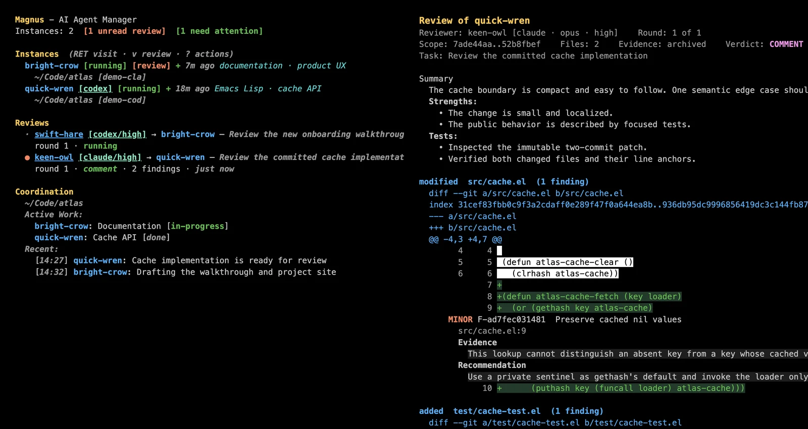
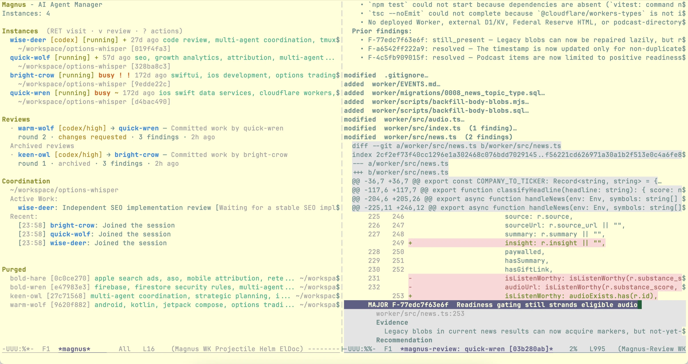

Who is doing what?
Named agents publish active work, files, discoveries, and decisions in a shared project journal.
Magit-inspired. Human-directed.
Magnus turns scattered agent terminals into a team you can see, steer, coordinate, and independently review—without hiding the native tools you already trust.

The missing layer
One coding agent is easy to hold in your head. With two or three, the questions change: Who owns this file? Who is waiting for me? Which session was the expert yesterday? How do I get a fresh-model review without reconstructing the task in another chat?
Named agents publish active work, files, discoveries, and decisions in a shared project journal.
The status buffer surfaces approvals, health, current work, and running reviews without stealing focus.
Agent identity, captured provider sessions, memory, shared context, and successful review lineages outlive a terminal.
A fresh headless reviewer inspects exact commits, then returns anchored findings in a Magit-style reader.
The Magnus loop
Magnus is built for programmers who want capable agents and active supervision—not an unattended swarm.
Create Claude Code and Codex agents for a project. Magnus persists their names and identities, and resumes captured provider sessions when available.
Keep provider composers, approvals, slash commands, and streaming output. Visit and redirect agents as the work unfolds.
Track active work, attention, health, coordination, shared discoveries, and decisions from one buffer.
*magnus*
Send the author's exact commits to the other provider and continue across rounds with the same named reviewer.
Independent review
Select an author and press v RET. Magnus asks that agent which committed range belongs to the task, validates it, and runs a fresh reviewer headlessly in an isolated checkout.

What Magnus does differently
Magnus does not replace Claude Code or Codex with a generic chat buffer. Both run directly in vterm.
The status buffer makes a small team legible while you keep visiting, steering, and judging each agent's work.
Identity, memory, context, and successful reviews survive. Stale queries and half-finished reviewer runs do not.
No Magnus daemon, hosted backend, provider plugin, or agent skill. Coordination is Markdown; reviews are local artifacts.
A thin control plane
Magnus launches your configured CLIs and uses their normal authentication and network behavior. Around them it adds durable identity, a single terminal-delivery path, project coordination, local traces, and exact-evidence review.
Explore the architecturenative TUI · durable identity · coordination · review
Start in sixty seconds
Install and authenticate Claude Code or Codex first. Install both for the default cross-provider review workflow.
(use-package magnus
:ensure t
:bind (("C-c m" . magnus)))M-x magnus-doctor.M-x magnus.Questions
No. One provider is enough for interactive agents. Install both when you want Magnus to choose the other provider for independent review.
No. Interactive agents run in their native terminal interfaces inside vterm. Magnus adds coordination and lifecycle around them.
No Magnus daemon or hosted service is involved. Durable Magnus state and completed review artifacts remain on your machine. Provider CLIs keep their normal network behavior.
No. Reviews intentionally require a clean worktree and exact committed evidence. Ask the author to commit first.
No. Magnus is optimized for hands-on programmers directing a small team and stepping into native agent sessions whenever judgment is needed.
{kind=link}